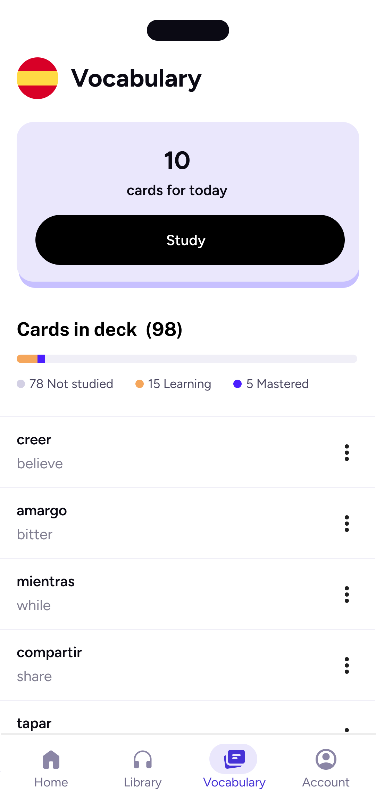
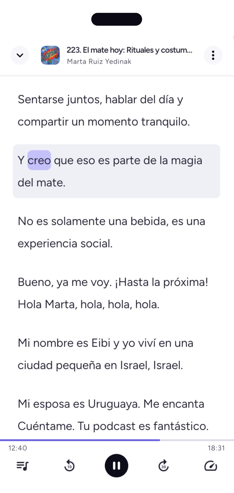

Synchronous transcripts
Follow every episode word-by-word with transcripts synced to the audio.
Unipod transforms real podcasts into immersive language lessons with interactive transcripts, instant translations, vocabulary review, and AI-powered insights.


How it works
Follow every episode word-by-word with transcripts synced to the audio.
Tap any word or phrase for an instant, in-context translation.
Every word you save becomes a flashcard, spaced perfectly for recall.
AI-generated summaries, chapters, and key insights help you understand every episode.
Why Unipod